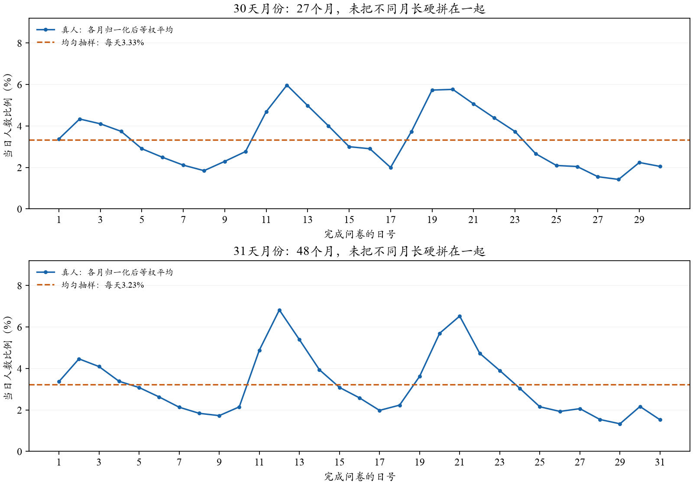
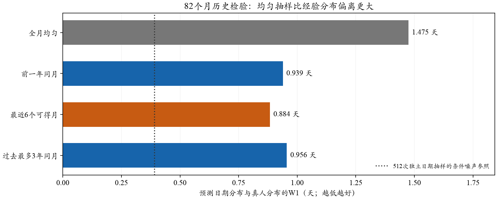
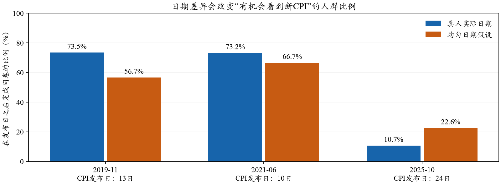

SCE · B配置审阅补充 · 日期元数据分析 · 2026-10-26 · 0 API
真人日期并非均匀，经验分布能改善日期匹配；B的主要工作在环境接线
2019-01—2025-10共82个月、98,340份合法月内日期显示明显月中集中。均匀分布的日期偏移平均1.475天，前一年同月0.939天，最近6个可得月份0.884天。经验分布不会增加LLM请求数。改B不必重写引擎，但必须同步重建个人可见环境；另发现2026-01新闻档只到1月7日，需要先核实补齐。
1．真人到底在什么时候作答？
只投影现有数据中的调查月、完成日期和权重，不使用通胀答案。82个月共98,382份记录，日期缺失0份；42份完成日期落在标称月之外，单列排除、不挪回原月。主图按人数统计；有效月内日期另有30份权重缺失，调查加权敏感性中排除并登记。
各月等权平均，1—10日占29.8%，11—20日占41.6%，21日至月底占28.6%；均匀分布对应的月中占比仅32.9%。12日及19—21日前后出现较明显峰值，但不同月份峰的位置和大小会变，不应只套一个固定“三峰模板”。
这与纽约联储2017年方法说明3.2节一致：调查分批邀请并发提醒，日期不是全月均匀。该说明解释机制；当前具体比例来自本地2019—2025数据，不把2017日程当成所有年份不变的规则。

每月先归一化，再跨月等权，避免大样本月份自动占更高比重。30天与31天月份分别展示，2月不进入这两幅图，但仍进入全部82月指标。日期没有可靠小时信息。
2．能否用连续均匀抽样替代？
按日构造环境时，连续均匀时间取整成日期，等价于每个日号概率1／月长。本次比较的不是数学上能不能抽，而是这种简化会丢失多少信息。均匀方案与实际日期分布的平均最大CDF差为11.3个百分点，日期W1为1.475天；并非几乎相同。
日期W1表示把一个日期分布移动到另一个日期分布的最小平均天数，不是通胀预期W1的百分点。512人从真实经验分布独立抽日期的条件模拟噪声约0.391天，均匀偏离更大；这只给数量尺度，不是考虑面板相关性的总体置信区间。

历史目标82个月。各目标月只能使用按九个月公开滞后假设已可得的更早月份，没有使用目标月日期来拟合抽样器，也未按SCE误差选参数。
前一年同月比均匀更接近真人；本次四种候选中，最近6个可得月份的等权混合在平均日期W1上更好。过去最多3年同月也作了比较，并未优于近期混合。它们的CPI可见比例误差改善较小，不能把日期分布改善等同于SCE的MAE已经下降。

只计发布日之后的完成日期，与项目前一日截止约定一致；不推断当天上午或下午是否看到发布。2019-11为差距较大的示例，2021-06为既有重点，2025-10有延迟发布特殊背景，均非代表所有月份。能看到不等于实际关注或吸收。
因此，均匀方案可以保留为简化对照，但目前没有“二者几乎等价”的证据。若要随机日期，优先考虑历史经验分布；抽取一组31个以内的日期概率与均匀抽取，工程差别很小。真正费工的是后面的环境筛选，而不是这几个概率。
3．怎样用历史日期，不引入未来信息？
两种简单可行的候选是：使用前一年同月的日期分布；或使用截止前最新可得6个月的混合分布。本次后一方案以各来源月等权，并按月长把日概率区间映射到目标日，概率守恒；没有额外拟合工作日、节假日或人口条件。它能平滑偶然尖峰，但不保证精确恢复目标月的邀请安排。
例如2025-11的原截止下，最新可得源波次按既定规则推定为2025-01，最近6个源月为2024-08—2025-01；前一年同月为2024-11。不能因为现在下载到了2025-10日期，就给2025-11提前使用这些尚未按规则公开的日期。11期四种候选概率已离线保存，仅供审阅，尚未分配到运行代理或改变提示。
4．B需要改多少工程？
改动属于输入层的中等适配，不必重写模型引擎。现有A已实现个人日期、逐日价格／政策／新闻快照、截止检查和提示重渲染；B可复用，但要保留其旧人口、合成先验与全局预测边界，不能直接把A当前真实人口搬过来。
第一步，给512户分配有固定种子的合成日期，并单独保存来源月份、抽样概率和全局D。第二步，按个人日期生成可见新闻、最新价格、政策与信心，再更新提示的日期和先后标签；按“月份×截止日”缓存，不重复读档。第三步，校验合成先验参考日期、四档新闻数量、实际发布时间、SCE泄漏过滤与原权重守恒。最后另冻新提示、来源哈希、预算和执行包，复用原容错及评价。
若保留当前月中D，个人截止为min(合成作答日前一天,D)，11期最多约148种日快照；抽到D之后的人不能读未来新闻。若改为整月受访、月底即时回测，最多334个日期快照，并重新核查全局人口来源资格、历史锚、宏观基线与后处理口径。两种方案都仍是每户一次回答，不会乘以30；若两套都跑，则是两个不同实验组。
5．本次查到的具体资料缺口
2026-01原始新闻档只有694篇，日期为1月1—7日。元数据记录抓取于2026-10-07；本地没有找到其他同月NYT档。1月8—13日连原共同截止也未覆盖，1月8—31日更不能视为全月已齐。它是来源完整性问题，不是模型拒绝吸收信息；需要重新核实取得完整档案，并按新文件另留版本，不能覆盖旧运行证据。
现有本地文件可见范围内，扩到月底另有297篇新闻缺基础主题标签，全部落在2026-09后半月。这个数字不包含补齐2026-01后可能新增的缺标签。个人警示倍数仍为1时，不必因此重标所有警示标签。当前仅查库存，没有下载、打标或调用Simulation。
查看11个月新闻档与基础标签库存
| 目标月 | 目标月观测日期数／月长 | 档案最后日 | 原截止之后缺主题标签 |
|---|
| 2025-11 | 30／30 | 30日 | 0 |
| 2025-12 | 31／31 | 31日 | 0 |
| 2026-01 | 7／31 | 7日 | 0 |
| 2026-02 | 28／28 | 28日 | 0 |
| 2026-03 | 31／31 | 31日 | 0 |
| 2026-04 | 30／30 | 30日 | 0 |
| 2026-05 | 31／31 | 31日 | 0 |
| 2026-06 | 30／30 | 30日 | 0 |
| 2026-07 | 31／31 | 31日 | 0 |
| 2026-08 | 31／31 | 31日 | 0 |
| 2026-09 | 30／30 | 30日 | 297 |
“有记录到月底”仅说明文件日期覆盖，不证明历史字节版本完整或无文章遗漏，也不替代严格事前可得性核验。
在完整档案核实后，可以先离线生成一种随机日期候选，核对几个代表日期的实际可见内容，再给新范围与Terminal命令。尚不能在没有重跑的情况下承诺SCE误差会下降。本轮不改变B截止、原始A/B或已固定统计参数。
方法、复算与工程任务 · 原B配置审阅
来源：outputs/sce_response_date_distribution_20261026_v2。只使用日期／权重元数据及公开新闻库存；0新API，0Q9密度拟合，当前输入包未改。